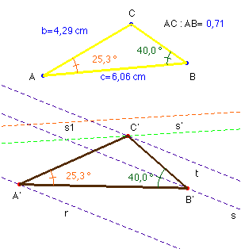
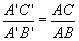

García Ardura (1948): Problemas gráficos y numéricos de geometría (Originales en su mayor parte). Madrid.(pág 135)

Solución del profesor Saturnino Campo Ruiz del IES Fary Luis de León (salamanca) (2 de Junio de 2003).- Supongamos el problema resuelto: sea A’B’C’ el triángulo cuyos vértices apoyan en las rectas paralelas r, s y t. Si imaginamos aplicado a este triángulo un giro alrededor de A’ del ángulo orientado BAC, llevaremos el punto B’ sobre la recta determinada por A’ y C’. Aplicando ahora una homotecia de centro A’ y razón
el punto B’ concluirá por transformarse en el punto C’.Pues bien, si a la recta s que contiene a B’ le aplicamos esta composición de transformaciones (una semejanza de centro A’), pasará a transformarse sucesivamente en las rectas s1 y s’. Ésta última cortará a la recta t en el punto C’. Fijados dos vértices, el triángulo queda completamente determinado a partir del dado.
La construcción se concreta como sigue: Se toma un punto arbitrario A’ sobre la recta r y se transforma como se ha explicado antes la recta s. El punto de corte de la transformada s’ con t nos proporciona el vértice C’. B’ queda determinado al tomar el ángulo en A’ igual al ángulo en A.